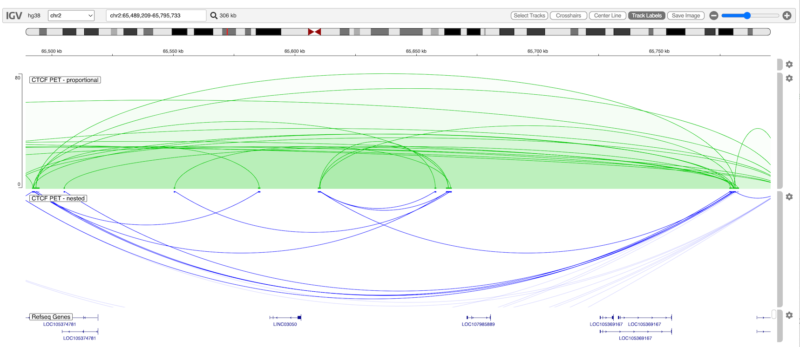

Interact Track
The interact track (type = 'interact') visualizes pairwise interactions between genome regions as arcs.
File formats#
Configuration Options#
| Property | Description | Default |
|---|---|---|
| arcType | See below | "nested" |
| arcOrientation | Direction of arcs ("UP" or "DOWN") | "UP" |
| alpha | Alpha transparency to apply to arcs that extend beyond viewport. Number between 0 and 1 | 0.5 |
| thickness | Line thickness | 2 |
Arc types#
- nested - Arc height is proportional to feature width.
- propotional - Arc height is proportional to feature score.
- inView - Proportional type, only arcs that are completely in view are drawn.
- partialInView - Proportional type, only arcs that are whole or partially in view are drawn.
Example#
const options =
{
genome: "hg38",
locus: "chr2:65,489,209-65,795,733",
tracks: [
{
url: "https://s3.amazonaws.com/igv.org.demo/GSM1872886_GM12878_CTCF_PET.bedpe.txt",
type: "interact",
format: "bedpe",
name: "CTCF PET - proportional",
arcType: "proportional",
arcOrientation: "UP",
color: "rgb(0,200,0)",
logScale: true,
max: 80,
visibilityWindow: 10000000
},
{
url: "https://s3.amazonaws.com/igv.org.demo/GSM1872886_GM12878_CTCF_PET.bedpe.txt",
type: "interact",
format: "bedpe",
name: "CTCF PET - nested",
arcType: "nested",
arcOrientation: "DOWN",
color: "blue",
alpha: 0.15,
visibilityWindow: 10000000
}
]
}
